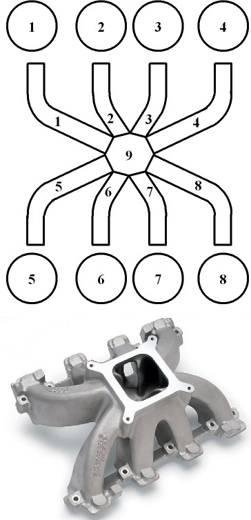
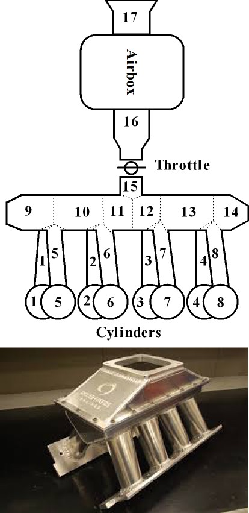
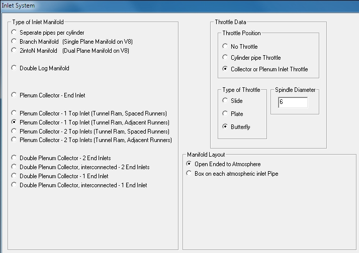

There is a large number of inlet systems available for V8 engines. With some pipes like independent runners connected to the atmosphere there is no ambiguity in the modeling process. However, when a plenum is involved the model is not so clearcut or obvious. A plenum as modeled in 1-dimensional gasdynamics is a 0-dimensional item and does not transmit waves over a distance with time delay but transmits it instantaneously. If the plenum is in a part of the manifold where this will have a significant influence on the wave action it should rather be modeled as a series of large diameter pipes.
The following shows some examples of inlet systems and how they are modeled in Dat4T:
There is no ambiguity in modeling this inlet.
To model this inlet the following manifold type and manifold layout is selected:

In this case it is clearly required to model the two plenums as a combination of pipes. If the plenum was much larger the choice is no longer so obvious and might require modeling it using either method and comparing the results.

To model this inlet the following manifold type and inlet configurations are selected:

In the case where the plenums are much larger in diameter to the extent where the wave action in the plenum is so small as to be negligable it can be modeled as two plenums:

To model this inlet the following manifold type and inlet configurations are selected:

A single plane manifold typically has a very small "plenum" where all the runners collect to the inlet pipe (Which is the effective diameter of all the carburettor pipes combined).

To model this inlet the following manifold type and inlet configurations are selected:

If the plenum is very large or the inlet wave action not important the single plane manifold can be modeled as a plenum into which the inlets and runners connect:

To model this inlet the following manifold type and inlet configurations are selected:

A dual plane manifold typically has two very small "plenums" where the runners collect to the inlet pipes (Which is the effective diameters of the connected carburettor pipes).

To model this inlet the following manifold type and inlet configurations are selected:

If the plenums are very large or the inlet wave action not important the dual plane manifold can be modeled as two plenums into which the inlet pipes and runners connect:

To model this inlet the following manifold type and inlet configurations are selected:

There is a single effective inlet into the tunnel. This inlet can be the sum of a single barrel, two barrel or four barrel carburetor or throttle body. The runners join the tunnel with a space between them requiring extra "collector joints" to model.

To model this inlet the following manifold type and inlet configurations are selected:

There is a single effective inlet into the tunnel. This inlet can be the sum of a single barrel, two barrel or four barrel carburetor or throttle body. The runners join the tunnel in adjacent pairs requiring two 6 pipe collector joints.

To model this inlet the following manifold type and inlet configurations are selected:

There are two effective inlets into the tunnel. These inlet can be the sum of a single barrel, two barrel or four barrel carburetor or throttle body. The runners join the tunnel with a space between them requiring extra "collector joints" to model.

To model this inlet the following manifold type and inlet configurations are selected:

There are two effective inlets into the tunnel. These inlet can be the sum of a single barrel, two barrel or four barrel carburetor or throttle body. The runners join the tunnel in adjacent pairs requiring two 7 pipe collector joints.

To model this inlet the following manifold type and inlet configurations are selected: